Maxwell Rohde | Prez
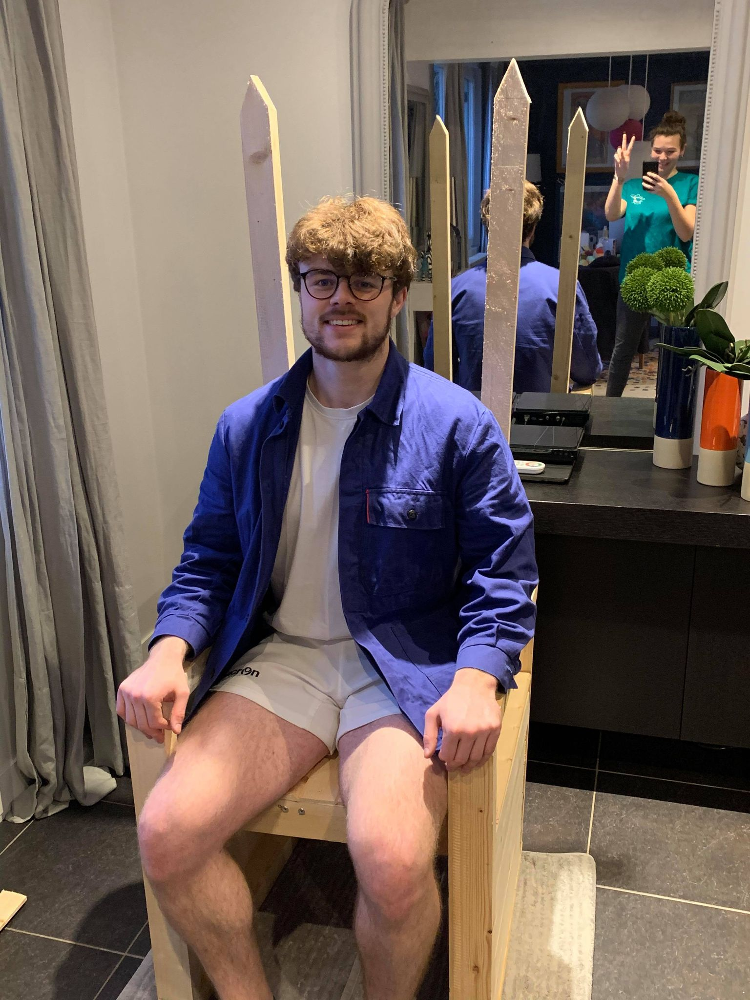Impossible de rater ce géant à la MEUD tant il en impose par sa carrure : une chose est sûre, il fait (rapidement) monter la température. Rugbyman reconnu mais avant tout véritable consommateur de Ricard, il saura vous charmer par son humour givré et sa tendresse fondante qui ne vous laisseront pas de glace.
Lara Beunas | Vice-Prez
Reine de l’Alaska, impératrice du crachat, championne de basket, baronne de la Chicoterie, voilà bien des titres pour décrire cette grande dame. Même si sa beauté vous fait frissoner, sachez que derrière son armure de glace, se cache une grande sensible. Avec elle suit la fraicheur du grand Nord !
Alicia Delamare | Secrétaire

La nuit tombe et les frissons te parcourent. Pourtant autour d’elle, il ne fait jamais froid. Son sourire ravageur te réchauffera. Son talent? Donne lui des platines et un p’tit coup de vodka puis, jusqu’au bout de la nuit tu danseras. Garde à toi, elle arrive. Au secrétariat, tu ne t’en empêchera pas, le smile, toujours tu l’auras.
Clément Dohollou | Trésorier

Accueillez la légende comme il se doit : levez vos verres pour Clément 4,2. Préparez vous à affronter le froid du regard de notre numéro 9 préféré. Rapide, efficace et glacial comme devant la cage, américain dans l’âme, vous n’avez aucune chance d’arrêter cette tempête. He’s got ice in his heart and on his wrist.
Tom Boring | Vice-Trésorier
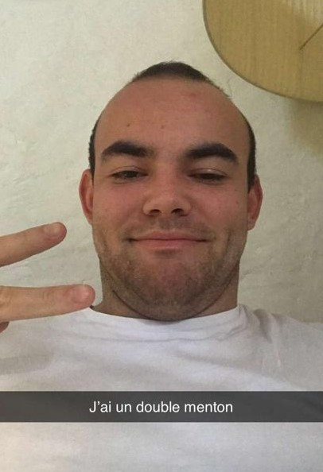Le voici le voilà l’ours de l’équipe. Il hiberne le jour et vit la nuit. Lorsqu’il n’est pas dans sa grotte, c’est dans le garage que vous le trouverez sûrement à roder. De ce lieu sacré il est le pilier, il ne passe pas une soirée sans qu’il ne vide sa bouteille avant de retrouver sommeil. Chômeur à plein temps, pour lui la trésorerie n’est jamais finie car elle n’a jamais commencé.
Mateo Thomas | Respo Anim
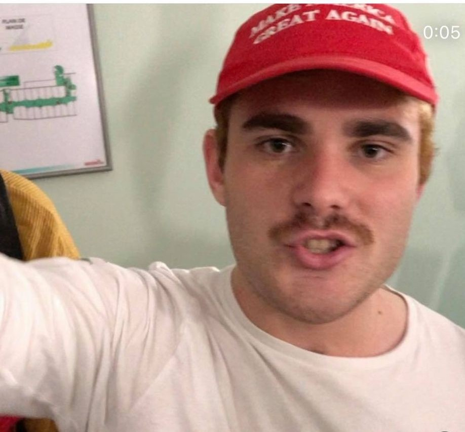Sosie parfait de Donald Trump, sa crinière dorée en fait fantasmer plus d’un.e. Il est le plus grand moite de tous les fêtards. On raconte que l’on a plus de chances d’observer une aurore boréale depuis le garage de Lavoisier plutôt que de le voir sortir de sa chambre. Si lors d’une nuit glaciale, vous cherchez un lieu où aller, n’hésitez pas à toquer chez Moiteo. Il saura vous accueillir à bras ouverts. #Moiteo #StopTheCount
Lisa Garcia | Pôle Anim
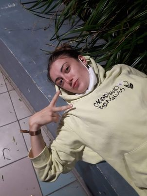Redoutable reine des neiges avec un tempérament de feu, on raconte que ses chorégraphies légendaires peuvent animer les bonhommes de neige. Guerrière de la tribu Pompom’, elle n’a pas froid aux yeux et saura vous en mettre plein la vue.
Alexandre Favreau | Pôle Anim

A bien des égards, son regard ravageur vous glacera le sang tout en vous enflammant le cœur. Favrax, égérie de Carhartt, ne vous laissera pas indifférent lorsque, devant vos yeux ébahis, il performera son fameux déhanché lors de sa séance journalière de zumba.
Viktor Lochot | Pôle Anim
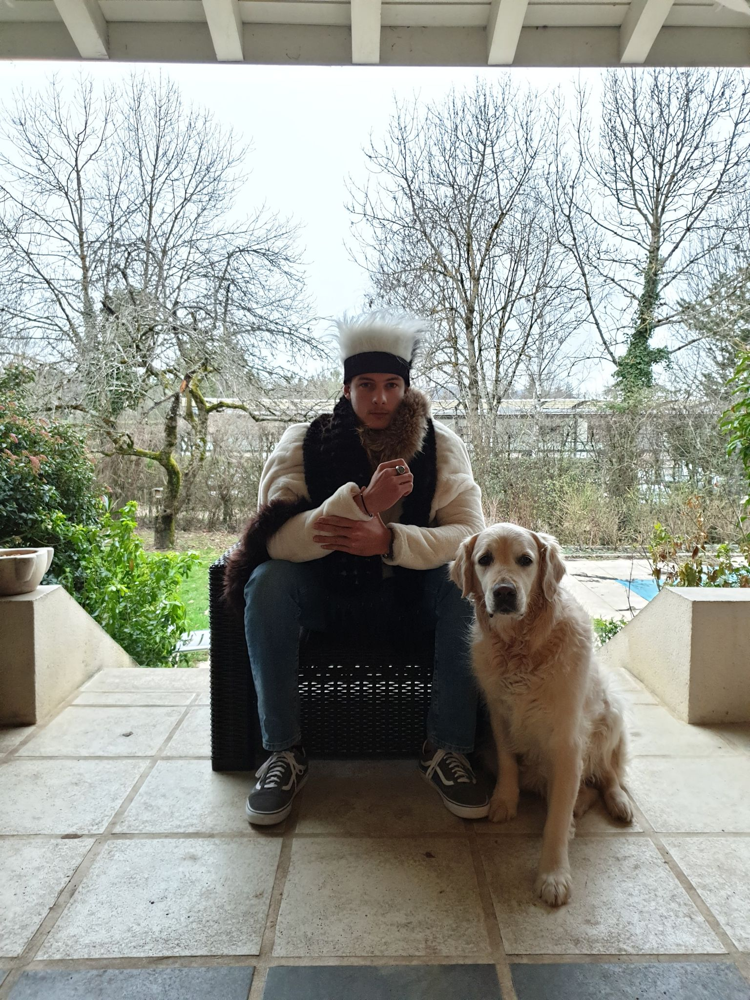Notre grand surfeur n'a pu quitter ses vagues pour le Nord. Regrettant de ne pas être là, il reste quand même présent sur les réseaux afin de mettre du soleil dans cette contrée glaciale.. N'hésite pas à lui envoyer un message !
Gabriel Boudes | Respo Com
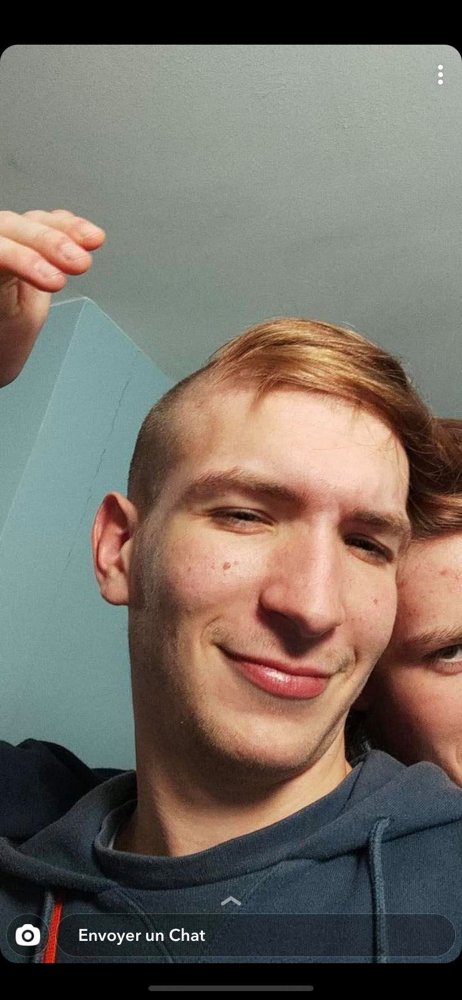Et voici notre plus grand scénariste et réalisateur The great Gabi! Avec un romantisme à la taille de son talent, il saura faire fondre tous les petits cœurs de glace (même celui du yeti) . N'hésite pas à venir le voir, c'est une oreille attentive et pleine d'amour qui te recevra.
Mathilde Back | Pôle Com
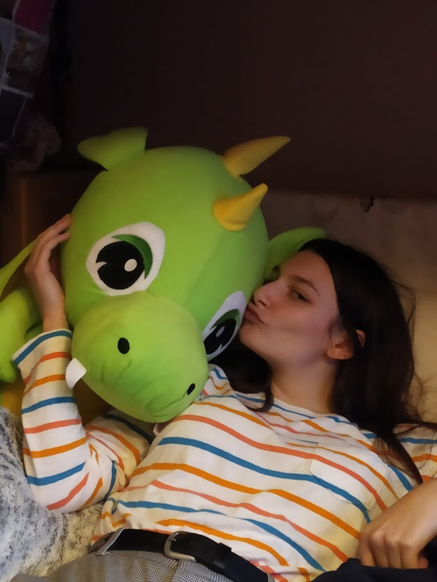Oyea Mathilde Back est de retour ! Ses œuvres sont dignes de la galerie des Glaces, on raconte que ses coups de pinceaux magiques ont donné vie au Yéti sur le Trône. Artistique et sportive, elle écrase des équipes de volley entières de son smatch. Son talent n’a d’égal que sa beauté, mais méfiez-vous de cette magicienne al’askienne, elle en a gelé plus d’un ...
Manoj Alagesan | Pôle Com
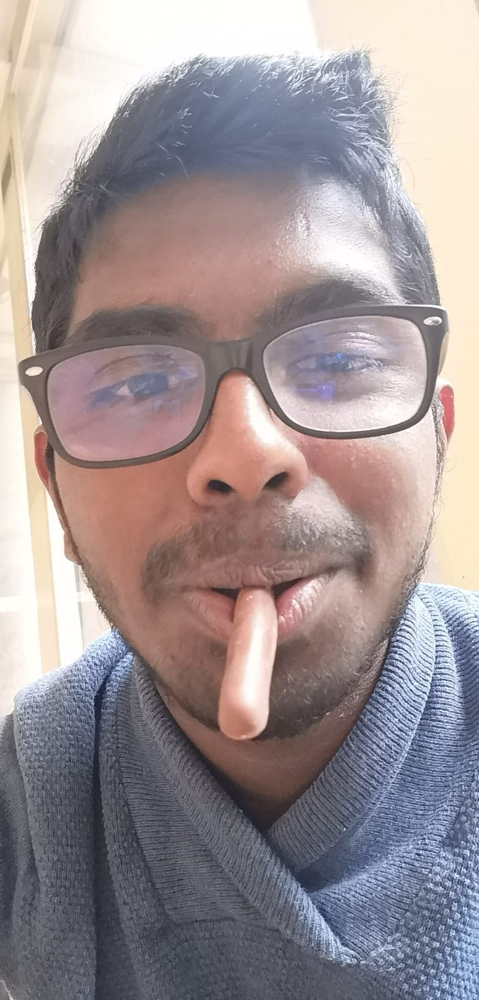Prenez garde car cet al’askien ne vous laissera pas de glace. Toujours le mot pour rire, une bonne descente, il réchauffera vos soirées. Prenez garde le verre de trop et c’est le capot assuré. La limite est souvent trop fine entre bien et capot. Vous deviendrez alors son meilleur ami et sa maman. Mais il ne faut pas s’attarder là dessus. C’est un homme en or qui vous soutiendra et vous fera bien rire.
Johan Gaudin | Pôle Com
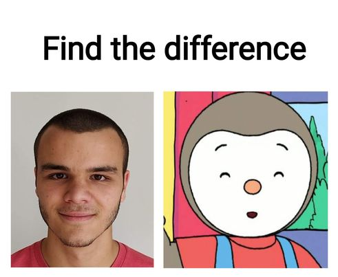Johan, enfin …, notre cher et tendre Jo, est le meilleur cameraman que Spielberg n’ait jamais connu ! Volleyeur et lucide à temps partiel, il saura vous guider même dans vos pires traquenards, vous ne trouverez personne de sang aussi froid et sucré que ce petit tchoupi.
Mathieu Lozano | Respo Sport
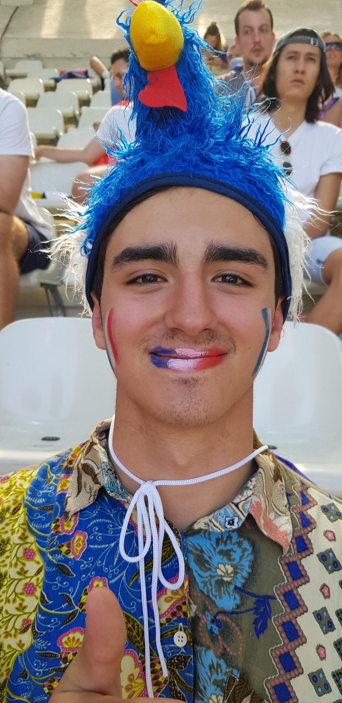Le Mathieu est visionnaire. Derrière son sourire glacial, il cache une connaissance du sport insoupçonnée. Malgré sa pilosité de yeti et son physique désavantageux, il a su prédire l'issue de nombreux matchs pour amasser la moula. Pour rester éveillé, pas besoin de neige (LA COCAÏNE TU AS CAPTÉ TOI-MÊME). Il travaillera d'arrache-pied pour qu'une avalanche de plaisir s'abatte sur vous.
Théo Montanteme | Pôle Sport

Ce sudiste invétéré est venu se confronter au froid glacial de l’Alaska. Lui qui est aussi grand que les sapins alaskiens avait plutôt l’habitude d’utiliser les glaçons pour l’apéro mais cette fois Théo n’est pas là pour rigoler. Sa connaissance du sport et sa bonne humeur vont faire fondre votre petit cœur de glace. Attention il arrive et compte bien Drifter sur les campagnes !
Didier Tsang | Pôle Sport
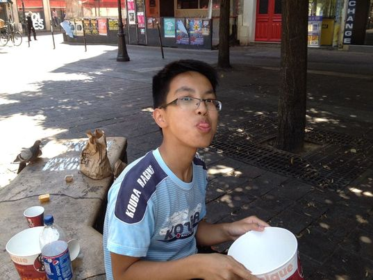Didier, ce petit gars rayonnant d’énergie positive, saura vous réchauffer le cœur, mais attention, grâce à ses paris, l’avalanche de billets verts vous emportera. Croyez-moi, cet homme au tempérament de feu et au rire de folie vous fera perdre votre sang-froid !
Alexandre Vaillant | Respo Fusion

Sociable et entreprenant, ce gars bourré d'énergie ne glisse devant rien et saura briser la glace en toutes circonstances. Surnommé Crevette pour son physique imposant, il ne se limite pas qu’au rugby pour vous prouver sa force de vivre et parviendra toujours à vous faire frissonner de joie !
Ariane Bleuzen | Pôle Fusion
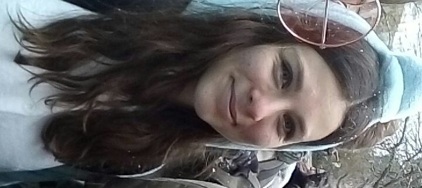Avec des yeux bleu glaces et un sourire d’une délicatesse rare, pas étonnant qu’on l’accuse pour le réchauffement climatique. Sa beauté vous fera fondre, il met de la couleur dans un monde un peu trop gris. Aimée de tous pour sa gentillesse, elle excelle aussi en volley. Toujours là pour aider, elle fait partie du pôle fusion, réunissant les tribus Lilloises et Douaisiennes.
Aurelien Duc | Pôle Fusion

Ce grand yéti au cœur tout mou est rempli d’amour. Il saura vous percer avec ses yeux aussi bleu que la glace ! Aussi à l’aise sur un tatami que sur un terrain de rugby, n’hésite pas à aller briser la glace en le rencontrant. En plus d’être un sportif hors pair, il est aussi un fier buveur de bière et un amoureux du saucisson. En deux mots, un bon vivant !
Jean-Baptiste Brel | Respo Sponso
Jean-Baptiste ou JB pour les intimes, ce petit bonhomme de neige respire la joie et la bonne humeur. Son sourire a déjà conquis les sponsors, et vous, arrivera-t-il à vous faire fondre ?
Clément Declercq | Pôle Sponso
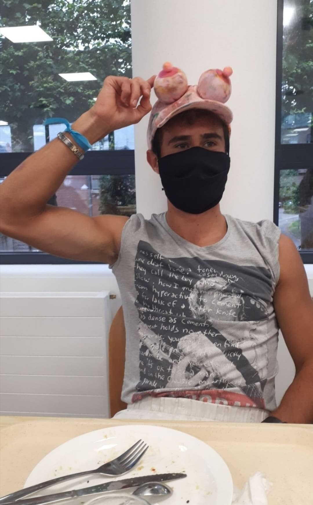Intrépide et un brin timide, notre Woody est un volleyeur vraiment torride. Cet ancien caribou, tout sauf givré, danse à l’écoute de chaque chanson alors faites attention à son boule qui déclenchera en vous une avalanche d’émotions. Croyez-moi, ce gentleman sans vice vous fera vivre votre plus beau solstice…
Pierre-Yves Grandjean | Pôle Sponso
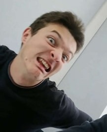Tennisman aguerri au cœur charmeur, croisez son regard et vous n’en resterez pas de glace. Prêt à vous réchauffer dans vos moments les plus froids, ne tremblez pas en lui confiant vos plus lourds secrets car il saura vous souffler un vent d’air frais.
Juliette Fray | Conseillère
Pleine d’énergie et gai comme un pinson, le rapace Juliette a tout pour diriger la volée. Elle est prête à faire décoller la liste aussi haut qu’un porté de PomPom et gardera le nid aussi bien qu’une cage de football. Charmante, dynamique et souriante, cette conseillère et son équipe vous préparent des campagnes endiablées.
Arthur Blouin | Conseiller

Grand buveur, théâtre mais surtout bon con 2022, le rapace Arthur n'est pas si con qu'il en a l'air. Notre boxeur et vice président de liste est capable de redresser les oiseaux sauvages lors des gestions de crise. Avec ce créateur hors pair de décoration et leader charismatique : les campagnes s'annoncent plus qu'AAAAAKAY.